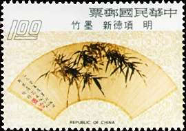
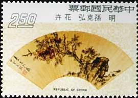
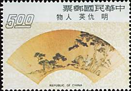
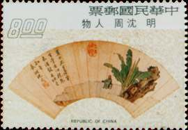
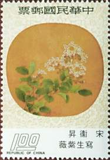
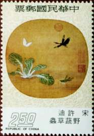
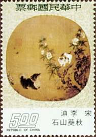
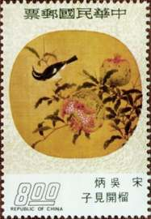

Famous Chinese Paintings on
Folding Fans Postage Stamps
(Issue of 1973)
Issue date: August 15, 1973. Process: Photogravure. Photographer: Liu Pao-chin. Paper: Photogravure stamp paper. Printer: Joh. Enschedé Stamps security Printers B.V, The Netherlands. The sheets are composed of 20 stamps. At the top of the whole sheet, six Chinese characters meaning Ancient Chinese Paintings on Fans are printed. Scott 1841-1844.
This is the first time when the paintings on fans are shown on stamps issued by the Taiwan Postal Directorate. The four fan pictures shown below were painted by the artists of the Ming dynasty (AD 1368-1644). They were chosen from the collection of the National Palace Museum. Each of stamps reveals some characteristics of the art of fan painting.
 |
 |
The folding fan belongs to the family of Chinese arts and has been very popular in the Chinese society. The first folding fan were manufactured during the Northern Sung dynasty (960-1126 A.D.). It was not until the Ming dynasty that this kind of fans enjoyed a great popularity. However, folding fans were most exquisite and reached their zenith during the Hsuan Te and Hung Chih periods (1426-1488 A.D.) of the Ming dynasty. Further more, the writers and painters of that generation were fond of writing or painting on fans. The four great masters of the Ming dynasty: Shen Chou, Wen Cheng-min, Tang Ying and Chiu Yingall excelled in fan painting. Thus, the folding fans has become indispensable ornaments, their artistic value considerably exceeding their practical utility.
 |
 |
Famous Chinese Paintings on
Moon-shaped Fans Postage Stamps
(Issue of 1974)
Issue date August 14, 1974. Process: Photogravure. Photographer: Liu Pao-chin. Paper: Photogravure stamp paper. Printer: Joh. Enschedé Stamps security Printers B.V, The Netherlands. Scott 1895 - 1898.
Four fan pictures, painted by the artists of the Sung dynasty (AD 960-1279 ), were chosen from the National Palace Museum collections as central theme of the set of stamps shown below. This set consists of four denominations: 1.00, 2.50, 5.00 and 8.00, depicting respectively: Wei Sheng's - Crape Myrtle, Hsu Ti's - White Cabbage and Insects, Li Ti's - Hibiscus and Rock, and Wu Ping's - Pomegranates.
 |
 |
 |
 |
The fans appeared during three ancient dynasties, Hsai, Shang and Chou, and were widely used during the Sung dynasty. The fans used at that time were of silk, and later became the moon-shaped fans. While Emperor Huei Tzung of the Sung dynasty was on the throne, he painted himself pictures on fans, so silk fans became very popular and also masterfully crafted. The four fan pictures chosen for this issue are silk fans, being vitally alive, elegant, and lovely. The round silk fan is the symbol of the reunion (the Chinese word 'round' also meaning reunion), and has been used for a long time by writers and painters as a support for their masterworks.